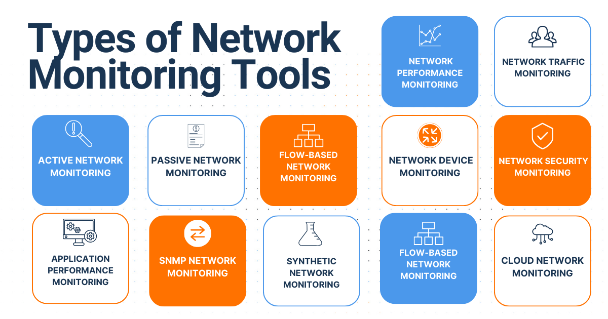

Introduction
This passage explores the role of sensors in detecting and preventing cyber threats within an organisation's network.
Understanding Sensors
- Detection Systems: Sensors encompass various monitoring tools that capture and analyse network activity for suspicious behaviour.
- Packet Capture: Sensors can capture raw network traffic (packets) for analysis, alerting security personnel to potential threats.
- Inline Sensors: These sensors actively filter and potentially block malicious traffic, offering a more proactive defence.
- Secondary Sensors: Wi-Fi sensors detect unauthorised wireless connections, while physical security sensors (cameras) monitor access to critical areas.
- Endpoint Agents: Software agents on devices act as sensors, reporting system activity and events to a central system for analysis.
Sensor Strategies
- Specialised Sensors: Organisations often deploy sensors tailored to specific traffic types (e.g., email security for phishing attempts).
- Network Segmentation: Sensors are typically positioned at the network perimeter (demilitarized zone) to monitor outgoing traffic.
Limitations of Traditional Sensors
- Resource Constraints: Deploying a vast number of sensors can be expensive and require ongoing maintenance.
- Alert Fatigue: Excessive alerts generated by sensors can overwhelm security personnel, potentially missing critical threats.
- Limited Visibility: Sensors placed only at the network perimeter might miss threats that bypass these entry points.
Enhancing Sensor Effectiveness
- Network Modelling: Create a detailed network map outlining all systems, connections, data flow, and existing sensor placements. Identify areas lacking sensor coverage and potential infiltration points.
- Penetration Testing: Engage ethical hackers (red teams) to simulate real-world attacks. Analyse sensor performance during these exercises and explore alternative sensor placements for improved detection.
- Encrypted Traffic Inspection: Consider methods to inspect encrypted traffic for malicious activity, while balancing security needs with privacy concerns.
- Advanced Sensor Development: Develop sensors that can discreetly detect specific threat activity, such as monitoring system resource usage to identify unauthorised programs.
- Passive Sensors: Configure passive interfaces on network devices to detect unauthorised activation, indicating potential adversary presence.
- External Sensors: Collaborate with internet service providers (ISPs) to deploy sensors outside your network boundary for a more comprehensive view of traffic.
Best Practices
- Staff Awareness Training: Educate staff to act as human sensors by reporting suspicious activity.
- Deep Packet Inspection: Where possible, implement solutions that allow sensors to thoroughly inspect unencrypted network packets.
- Preventative Measures: Utilise sensors to trigger automated actions such as blocking or filtering malicious traffic.
- Sensor Hardening: Configure sensors to prevent unauthorised access and accidental data leaks.
Conclusion
By implementing a strategic sensor deployment plan along with staff awareness training, organisations can significantly strengthen their cybersecurity posture. This involves understanding network vulnerabilities, utilising a variety of sensor types, and continuously improving detection capabilities through testing and collaboration with external providers.